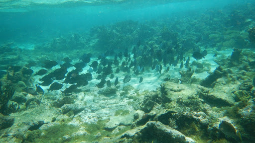

Fatos sobre o Stomatopoda
Informações Gerais
Stomatopoda (ou estomatópode), chamados popularmente de tamarutacas ou de lacraias-do-mar no Brasil, é uma ordem de crustáceos marinhos da subclasse Hoplocarida, que agrupa cerca de 400 espécies, caracterizadas principalmente pela morfologia da segunda pata torácica, que é modificada em apêndice subquelado, lembrando uma pata de louva-a-deus.
São animais que apresentam comportamentos sociais muito variados, desde ameaças visuais contra predadores até comportamentos de côrte. De acordo com a anatomia da sua pata raptorial é possível distinguir entre dois grupos funcionais, as perfuradoras (spearers) ou as esmagadoras (smashers), sendo que cada um dos tipos apresenta sua própria variação comportamental e até mesmo de habitat.
As maiores esmagadoras, tais como exemplares de Odontodactylus scyllarus, são capazes de desferir um dos mais rápidos e violentos golpes do reino animal, um soco que pode apresentar a velocidade de um tiro calibre .22 (equivalente a 720km/h) e uma força de impacto de 60 kg/cm².
Classificação Científica
- Reino: Animalia
- Filo: Arthropoda
- Subfilo: Crustacea
- Classe: Malacostraca
- Subclasse: Hoplocarida
- Ordem: Stomatopoda
Local onde Vivem (Habitat)
Odontodactylus scyllarus vive em tocas que constrói nos fundos dos corais, ou através de buracos deixados por outros animais, em rochas e substratos próximos de corais de recifes a cerca de 40 metros de profundidade.
Defesa Natural
As Odontodactylus scyllarus possuem como defesa um dos mais rápidos e violentos golpes do reino animal, seu soco fora registrado com uma velocidade de 80 km/h e aceleração similar a uma arma calibre .22. A pressão exercida pelo soco é de 60 kg/cm². Essa força esmagadora é a responsável pelo seu título de "lagosta-boxeadora" e é capaz de facilmente quebrar a carapaça de um caranguejo, as conchas duras e calcificadas de gastrópodes ou até mesmo quebrar o vidro reforçado de um aquário.

Referências Bibliográficas
Foto Habitat: http://www.fullcirclesailing.nl/
Referência 1: https://pt.wikipedia.org/wiki/Odontodactylus_scyllarus
Referência 2: https://pt.wikipedia.org/wiki/Stomatopoda
Foto Box em ação: https://www.youtube.com/watch?v=E0Li1k5hGBE